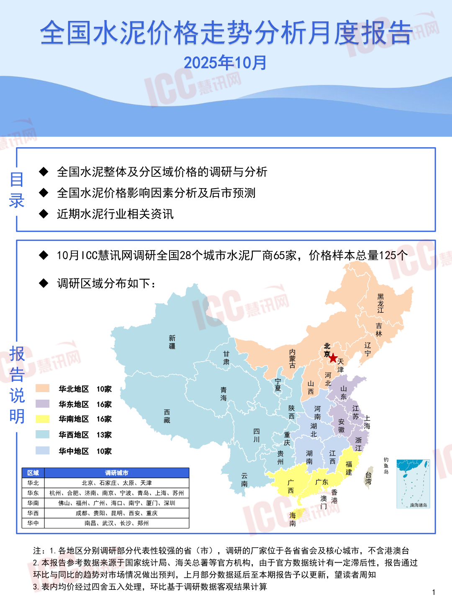
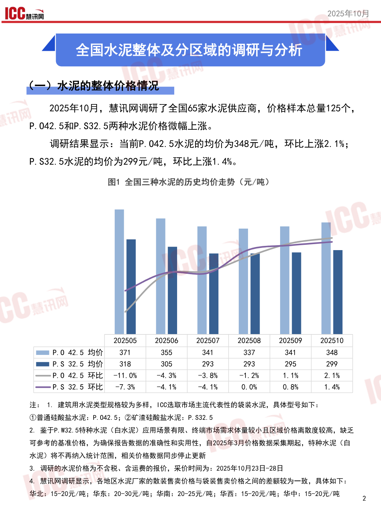
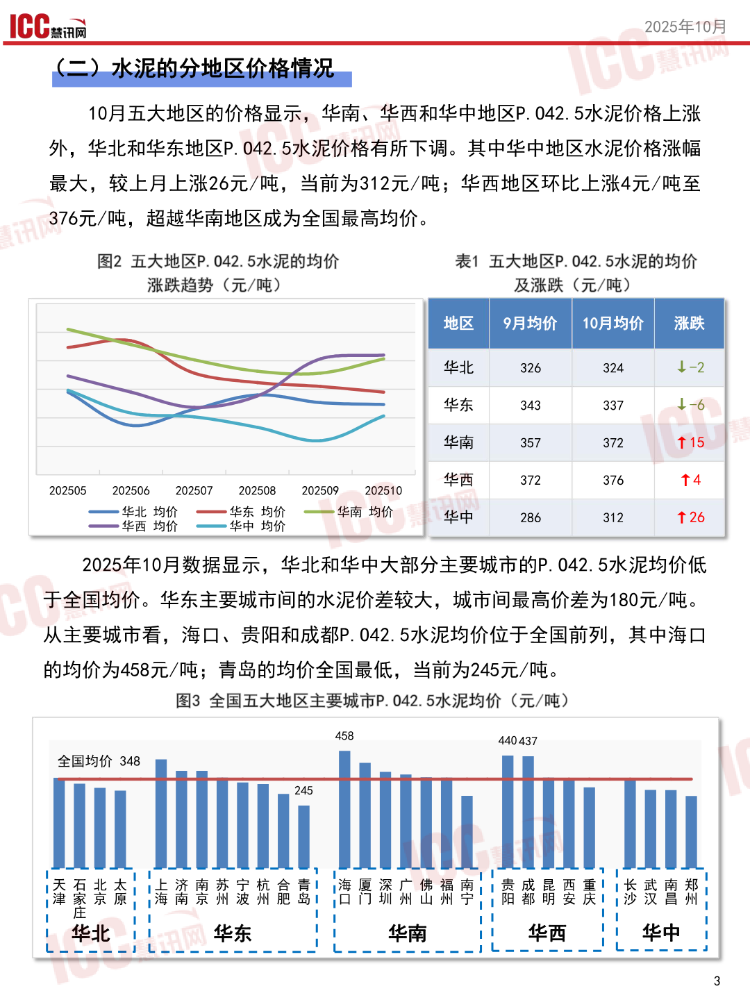
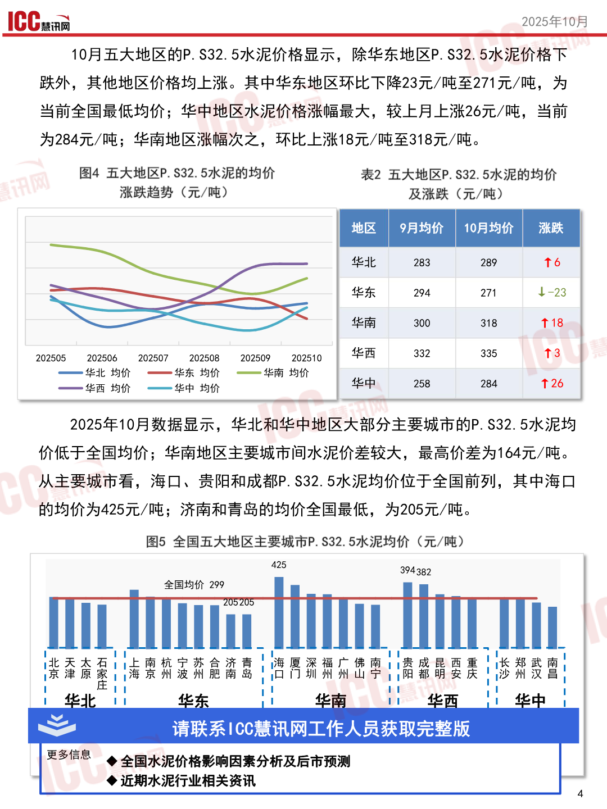

泥价格走势分析月度报告
全国水泥价格走寿报告
2025年10月
目“全全国水泥整休及分区域价格的调研与分析
录人全国水泥价格影响因素分析及后市预测
人近期水泥行业相关资讯
人10月10C慧讯网调研全国28个城市水泥厂商65家，价格样本总量125个 人调研区域分布如下: 江 新林 4河津 、\、华北地区10家青夏西山 说中各
华东地区“16家四下所相
明华南地区16家藏西直本
华西地区”13家前隐北庆
华中地区”10家贵湖江本
州西鱼一史7
区域调研城市二过二凡区攻
注:1.各地区分别调研部分代表性较强的省〈市)，调研的厂家位于各省省会及核心城市，不含港澳台
2.本报告参考数据来源于国家统计局、海关总署等官方机构，由于官方数据统计有一定滞后性，报告通过
环比与同比的趋势对市场情况做出预判，上月部分数据延后至本期报告予以更新，望读者周知
3.表内均价经过四舍五入处理，环比基于调研数据客观结果计算1
查看原版第1页

1CC2025年10月 TEST 2025年10月，慧讯网调研了全国65家水泥供应商，价格样本总量125个， P.042.5和P.S32.5两种水泥价格微幅上涨。 调研结果显示:当前P.042.5水泥的均价为348元/吨，环比上涨2.1%; P.S32.5水泥的均价为299元/吨，环比上涨1.4%。
图1全国三种水泥的历史均价走势元/吨)
202505202506202507202508202509202510
| EGG P.0 42.5 | 均 价 371 | 355 | 341 | 337 | 341 | 348 |
|---|---|---|---|---|---|---|
| WP.S 32.5 | 均 价 318 | 305 | 293 | 293 | 295 | 299 |
| 一 一 P.0 42.5 | 环比 -11.0% | 4. 3% | 一 3. 8% | 一 1. 2% | 1. 1% | 2. 1% |
| 一 P.S 32.5 | 环比 -7.3% | 一 4. 1% | 一 4. 1% | 0. 0% | 0.8% | 1. 4% |
注:1，建筑用水泥类型规格较为多样，10C选取市场主流代表性的袋装水泥，具体型号如下:
外普通硅酸盐水泥:P.042.5，@@矿渣硅酸盐水泥:P.S32.5 2，鉴于P.W32.5特种水泥〈自水泥)应用场景有限、终端市场需求体量较小且区域价格离散度较高，缺乏 可参考的基准价格，为确保报告数据的准确性和实用性，自2025年3月价格数据采集期起，特种水泥〈白 水泥)将不再纳入统计范围，相关价格数据同步停止更新 3，调研的水泥价格为不含税、含运费的报价，采价时间为:2025年10月23日-28日 4，慧讯网调研显示，各地区水泥厂家的散装售卖价格与袋装售卖价格之间的差额较为一致，具体如下: 华北:15-20元/吨;华东:20-30元/吨;华南:20-25元/吨;华西:15-20元/吨;华中:15-20元/吨2
查看原版第2页

IGCC二2025年10月 10月五大地区的价格显示，华南、华西和华中地区P.042.5水泥价格上涨 外，华北和华东地区P.042.5水泥价格有所下调。其中华中地区水泥价格涨幅 最大，较上月上涨26元/吨，当前为312元/吨;华西地区环比上涨4元/吨至 376元/吨，超越华南地区成为全国最高均价。
图2五大地区P.042.5水泥的均价表1五大地区P.042.5水泥的均价
涨跌趋势〈元/吨)加及涨跌〈元/吨)
| 华北 | 326 | 324 | J1-2 | ||||
|---|---|---|---|---|---|---|---|
| 华东 | 343 | 337 | 1 -6 | ||||
| 华南 | 357 | 372 | T15 | ||||
| 202505 。 202506 | ”202507 。 202508 | 。 202509 | 202510 | 华西 | 372 | 374 | 1 |
| 一 竺 | 邹 一 每 | 铝 一 | 铺 撼 | | | 2 | 32 | 1T26 |
2025年10月数据显示，华北和华中大部分主要城市的P.042.5水泥均价低 于全国均价。华东主要城市间的水泥价差较大，城市间最高价差为180元/吨。 从主要城市看，海口、贵阳和成都P.042.5水泥均价位于全国前列，其中海口 的均价为458元/吨;青岛的均价全国最低，当前为245元/吨。
图3全国五大地区主要城市P.042.5水泥均价〈元/吨)
458440437
全国均价348
|天石北太!!上济南苏宁杭合青|!海厦深广佛福南!}贵成昆西重1|长武南郑|
| 1 十 做 于 本 | 1 海 本 本 州 | 波 州 肥 怠 | ID | 门 圳 州 山 | 州 人 | 交 居 | 1 党 | 及 昌 1 |
|---|---|---|---|---|---|---|
| 委任 长 = | 妹 训 网 人 | ,1 | 华南 | 儿 华 | 西 1 华中 | | |
查看原版第3页

1CC2025年10月 10月五大地区的P.S32.5水泥价格显示，除华东地区P.S32.5水泥价格下 跌外，其他地区价格均上涨。其中华东地区环比下降23元/吨至271元/吨，为 当前全国最低均价;华中地区水泥价格涨幅最大，较上月上涨26元/吨，当前 为284元/吨;华南地区涨幅次之，环比上涨18元/吨至318元/吨。
图4五大地区P.S32.5水泥的均价表2五大地区P.S32.5水泥的均价
涨跌趋势〈元/吨)及涨跌〈元/吨)
加283289
| 华东 | 294 | 271 | 二 -23 | ||||||
|---|---|---|---|---|---|---|---|---|---|
| 华南 | 300 | 318 | T18 | ||||||
| 202505 | 202506 | 202507 | 202508 | 202509 | 202510 | 华西 | 332 | 335 | T3 |
一基尖一敌覆一定|可
2025年10月数据显示，华北和华中地区大部分主要城市的P.S32.5水泥均 价低于全国均价;华南地区主要城市间水泥价差较大，最高价差为164元/吨。 从主要城市看，海口、贵阳和成都P.S32.5水泥均价位于全国前列，其中海口 的均价为425元/吨;济南和青岛的均价全国最低，为205元/吨。
图5全国五大地区主要城市P.S32.5水泥均价〈元/吨)
425394382
全国均价299
|1全和
多近期水泥行业相关资讯4
查看原版第4页

AN本 专注让我们更专业!
看讯网在瑞达恒各分公司的联系方式
Www.rccgroup.cn”www.iccchina.com
查看原版第5页

瑞达恒 5EEESULA一DERTc
ZEsSSSS1人研立院
EN板块上线了
2SN二央线
PASSSSSNNNA专注让我们更专业
ETASSSNS和.AE人0区 SSSSN
@聚焦于工程领域的行业研究报告
@@对行业实时趋势和国家产业政策的研究与解读
@@为工程行业客户提供专业的第三方视角和精准的市场分析 专注让我们更雪上，
5全研究取信于工程多9行业基究报告行业区时姑的和Ch1人
全于[AAS|量久册
和为工理行业客户提供专业第三方视角和六1隐
四行业报告。团委研究
2国
查看原版第6页